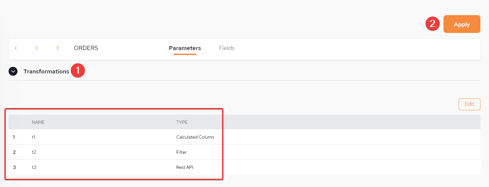

Refer to Transformations for a detailed overview
After completing the steps of adding tables to a pipeline (see setting up tables), click edit next to a table name:
This Configuration screen will be displayed. Click Add Transformation, to start the process of configuring Transformations:

1: Provide a name for the Transformation
2. Select Transformation Type: Calculated Column
3. Type the name of the columns to include.
4. Each transformation must be validated before adding the next. If there are multiple validations, they must all be validate alone and against each other.
5. Once validation is successful, Transformation Validated will be displayed.
6. Click this to add another transformation if required.
1: Provide a name for the Transformation.
2. Select Transformation Type: Filter.
3. Populate with the filter - an example is provided.
4. Each transformation must be validated before adding the next. If there are multiple validations, they must all be validate alone and against each other.
5. Once validation is successful, Transformation Validated will be displayed.
6. The new column that was added through the first transformation is displayed here.
7. Click this to add another transformation if required.
1: Provide a name for the Transformation
2. Select Transformation Type: Filter
3. Insert the URL of the External REST service configuration file
4. To download the external file, click Download
5. Once validation is successful, Transformation Validated will be displayed.
1: From the imported schema select an API Function.
2. From the drop-down select the API Operation.
3. In this example, a POST function is selected.
1: From the main Transformation setup menu, click Choose.
2. Select the server.
3. Click Apply.

1: POST function previously selected
2. Server previously selected
3. Provide the Input Request Body (there is a default example provided). This is mandatory.
The user should update the input request body to use real values from the table instead of the default values provided.
The user should update the input request body to use real values from the table instead of the default values provided.
Example: {"product": "${PRODUCT_NAME}","price": ${PRICE}}
The use of the $ denotes a placeholder for columns from the table. It will be substituted by the value in the actual column.
1: Select Columns From Response.
2. Define Table Columns Value.
3. Define the Type.
4. The is the JSON Path.
1: From the imported schema select an API Function.
2. From the drop-down select the API Operation.
3. In this example, a GET function is selected.
1: Define the API parameters
2. Click for Advanced Settings (see below).
3. Select columns for response.
3. Define table column values.
These are used to provide global parameters for REST transformations.
Authorization – Used to specify authentication credentials that will be passed in “Authorization” header of http request, for example “Bearer <bearer-token>.
Execution mode - Allows to chose between synchronous and Thread pool (asynchronous) mode. Later allows execution of multiple rest requests simultaneously increasing throughput of rest transformation.
Thread pool size – This is used in thread pool mode to control parallelism.
Timeout in millis - Specifies maximum time allowed for request, If failed request will be retried up to “Number of retries” times.
Number of retries - Define the number of retries.
Include http status - If “Include http status” is enabled then “http status column name” will be added to the resulting table with status code of REST API.
Http status column name - If “Include http status” is enabled then “http status column name” will be added to the resulting table with status code of REST API.
Once all the Transformations have been validated click Close from the top of the Transformations setup screen.
If you do not apply the Transformations, it is still possible to edit them.

1: List of all configured Transformations.
2. Click Apply
Save the table. Refer to setting up tables for the instructions.